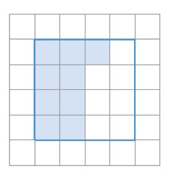
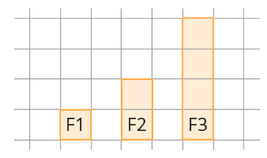

Entoure la bonne réponse : Un siècle dure : a) 100 jours b) 100 ans c) 1000 h d) 3600 s |
Q 
|
75 x 10 = ………… 435 x 100 = …………... |
Voici un pattern de figures :  Combien y a-t-il de carreaux dans la figure F4 ?
|